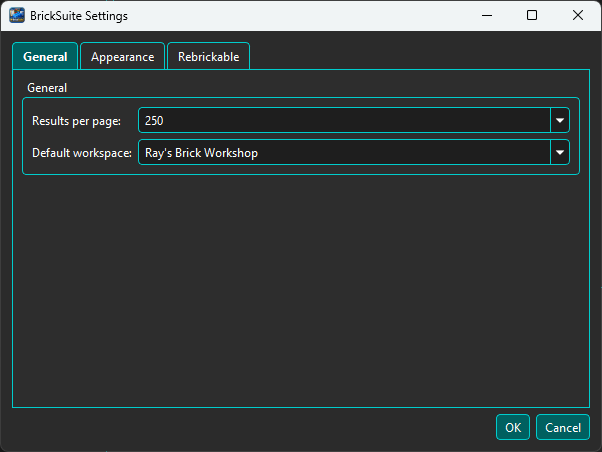
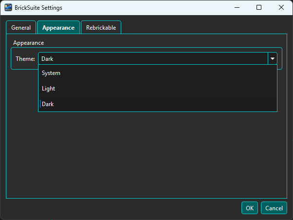
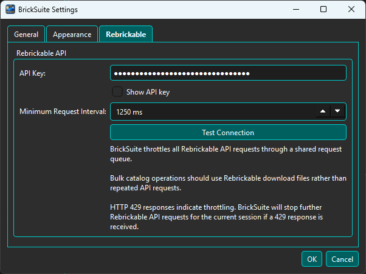

Settings contains user preferences that control how BrickSuite starts, appears, and connects to supported external services. These preferences persist between application sessions.
Settings are separate from the BrickSuite database content that represents your workshop.
BrickSuite Database Workspaces, Storage, Inventory, History Builds, Requirements, Allocations Application Settings Startup preferences Appearance External-service configuration

The General page contains application-wide preferences, including the Default Workspace. The Default Workspace determines which Workspace BrickSuite selects automatically when the application starts. When only one Workspace exists, BrickSuite can select it automatically.

The Appearance page controls BrickSuite's visual theme. The expanded Theme list in the screenshot shows the choices currently supported by the application.
Changing the theme affects BrickSuite's presentation; it does not alter Storage, inventory, Builds, or other workshop data. Most screenshots in this Help system were captured using Dark theme, so colors may differ when another theme is selected.

The Rebrickable page contains the configuration BrickSuite uses when a feature needs to communicate with Rebrickable. Enter the credential requested by the page and save the setting before using features that require that connection.
CSV workflows are separate from API configuration. Owned-parts CSV files and MOC requirement CSV files are handled by their respective import workflows.
See Rebrickable Import, MOCs, and Sets Catalog for those workflows.
After changing a preference, use the Settings dialog's normal save or confirmation action. Saved preferences are retained for future BrickSuite sessions.
Press F1 while the Settings dialog has focus to open this Settings Help topic. This provides contextual Help without closing Settings and navigating through Help Contents.
Application preferences and database content are separate concepts. Database Backup / Restore protects the BrickSuite database. See Backup / Restore.